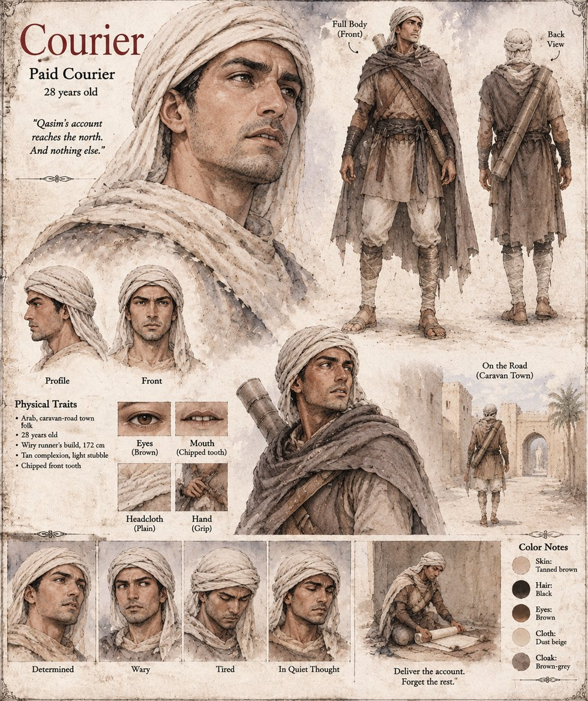

The Courier
Courier paid by Qasim al-Fahmi · unnamed · carries the sworn account north · paid to forget his own errand · late twenties by the sheet
The courier Qasim pays to carry his sworn account north, and then to forget his own errand. What he carries is the notarized record of a dying thief's confession, the one document that ends the false premise of the war; once it has done its work it is filed in the provincial archive, unread by anyone who might have cared, four shelves from the title that misnames the war. The manuscript gives the courier no name, and he is paid so that nothing of the errand outlasts it.
The sheet draws him wiry, with a narrow, sunburned, alert face, light stubble, close-cropped black hair under a plain beige headcloth, brown eyes, tan skin and a chipped front tooth, in a short travel tunic, a brown-grey cloak, wrapped calves and sandals, with a small knife and an oilcloth tube slung across his back for the document. Its expression panels run determined, wary, tired and in quiet thought, and it gives him two lines of its own, Qasim's account reaches the north. And nothing else. and Deliver the account. Forget the rest. The age of about twenty-eight, the lines and everything visual are the sheet's.